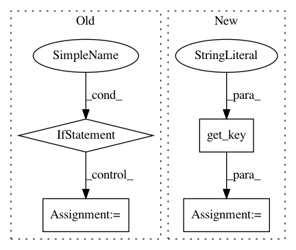

60dfcf812eca79017dced46e1189245c050a3fd6,dl/callbacks.py,OptimizerCallback,on_epoch_start,#OptimizerCallback#Any#,370
Before Change
self.optimizer_wds = {}
for key, optimizer_ in state._optimizer.items():
wd = optimizer_.param_groups[0].get("weight_decay", 0.0)
if wd > 0:
self.optimizer_wds[key] = wd
optimizer_.param_groups[0]["weight_decay"] = 0.0
def grad_step(self, optimizer):
for key, value in optimizer.items():
if key in self.optimizer_wds:
wd = self.optimizer_wds[key]
After Change
state.set_key(momentum, "momentum", inner_key=self.optimizer_key)
def on_epoch_start(self, state):
optimizer = state.get_key(key="optimizer", inner_key=self.optimizer_key)
self.optimizer_wd = optimizer.param_groups[0].get("weight_decay", 0.0)
optimizer.param_groups[0]["weight_decay"] = 0.0
@staticmethod
In pattern: SUPERPATTERN
Frequency: 3
Non-data size: 4
Instances
Project Name: Scitator/catalyst
Commit Name: 60dfcf812eca79017dced46e1189245c050a3fd6
Time: 2018-12-10
Author: scitator@gmail.com
File Name: dl/callbacks.py
Class Name: OptimizerCallback
Method Name: on_epoch_start
Project Name: Scitator/catalyst
Commit Name: 60dfcf812eca79017dced46e1189245c050a3fd6
Time: 2018-12-10
Author: scitator@gmail.com
File Name: dl/callbacks.py
Class Name: OptimizerCallback
Method Name: on_batch_end
Project Name: Scitator/catalyst
Commit Name: 60dfcf812eca79017dced46e1189245c050a3fd6
Time: 2018-12-10
Author: scitator@gmail.com
File Name: dl/callbacks.py
Class Name: SchedulerCallback
Method Name: step